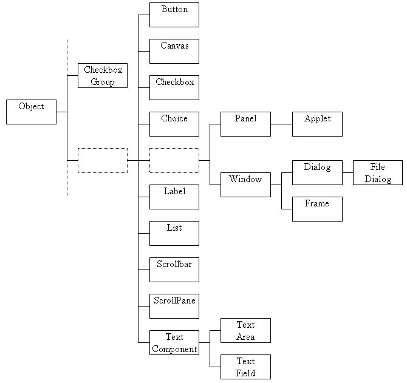

A simplified class hierarchy diagram of the Java AWT is shown in Figure 2.2. The missing classes are mainly concerned with layout management and with menus; these parts of the hierarchy will be introduced later in this and also in the following chapters. The Object class, shown on the left as the root of the hierarchy, is not a part of the AWT but all Java classes, including the AWT classes, are descended from the Object class and so it is shown on this diagram.

Figure 2.2 The Java AWT Component Class Hierarchy.